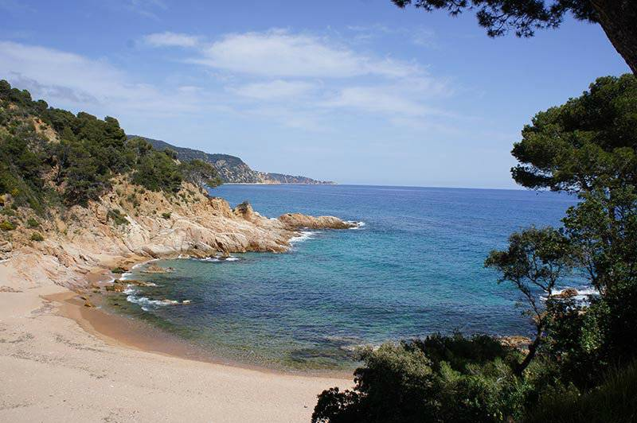

About me#
I’m a physicist/engineer converted into a computational statistician. I love statistical data analysis, programming and data visualization. I am currently a doctoral researcher at Helsinki University working on AI assisted Bayesian workflow and contributing to open source. I am a core contributor of ArviZ a project for exploratory analysis of Bayesian models. In addition to probabilistic modeling, I also enjoy teaching and technical writing.
I think that the culture in scientific research needs deep changes towards a more collaborative, open and diverse model. I am interested in open science, reproducible research and science communication. I want to pursue a career in probabilistic modeling and statistical research with special emphasis on openness and reproducibility.
In my spare time, I like playing board games and going to the beach to do water activities. I have been sailing and snorkeling regularly since I was little and more recently I added kayaking to the mix too! I generally spend the summer at the Costa Brava. Here I leave you a sneak peak of the views when nobody is around

Open source libraries#
Here are highlighted some open source projects I contribute to, check out my GitHub profile for a complete list of the projects I contribute to.
ArviZ: Exploratory analysis of Bayesian models in Python or Julia
xarray-einstats: Label based statistics, linear algebra and einops for xarray objects.
PyMC: Friendly probabilistic programming in Python.
In addition to helping a bit with PyMC development, I am one of the main curator/reviewers of PyMC-examples, a collection of Jupyter notebooks about Bayesian modeling with PyMC.
mombf: Bayesian model selection and averaging for regression and mixtures for non-local and local priors.
exosherlock: Smooth your interactions with the NASA Exoplanet Archive using Python and pandas.
Projects and initiatives#
CZI EOSS 4 grant: Bayesian Open Source Software for Biomedicine: Stan, ArviZ and PyMC
PyMC-Data Umbrella sprint: A series of webinars and sprint event to encourage and help people contribute to PyMC.
Season of Docs at ArviZ: GSoD is an initiative to help open source projects get in contact and hire technical writers.
PyMCon 2020: PyMCon 2020 is an asynchronous-first virtual conference for the Bayesian community
Publications#
Mikkola, Petrus, et al. “Prior knowledge elicitation: The past, present, and future.” arXiv preprint arXiv:2112.01380 (2021).
Rossell, David, Oriol Abril, and Anirban Bhattacharya. “Approximate Laplace approximations for scalable model selection.” Journal of the Royal Statistical Society: Series B (Statistical Methodology) 83.4 (2021): 853-879.
Badenas-Agusti, Mariona, et al. “HD 191939: Three Sub-Neptunes Transiting a Sun-like Star Only 54 pc Away.” The Astronomical Journal 160.3 (2020): 113.
Foreman-Mackey, Daniel, et al. “emcee v3: A Python ensemble sampling toolkit for affine-invariant MCMC.” arXiv preprint arXiv:1911.07688 (2019).
Get the emcee package code!
Talks and conferences#
PyMC-Data Umbrella sprint webinar: Contributing to PyMC documentation video and presentation material
Data Umbrella webinar: Bayesian modeling with PyMC3 video recording, slides
PROBPROG 2020: Backend agnostic exploratory analysis of Bayesian models. Poster presentation. All the materials are available on GitHub
StanCon 2020: ArviZ, InferenceData, and NetCDF: A unified file format for Bayesians. Slides and video presentation are available at GitHub, the slides are executable thanks to Binder!
Slides and video presentations are available in English, Catalan, French and Finnish.